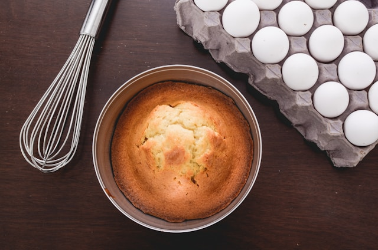

Home
Vanilla Sponge Cake

Photo by
Pablo Lancaster Jones on
Unsplash
Description
Vanilla sponge cakes are a fluffy, soft, and simple to make.
It's the perfect canvas for you to add whatever you want, such as fruits
or berries, whipped cream, and many other things! This recipe
will teach you everything you need to make the perfect sponge cake.
You will need a 2 x 8-inch cake pan for this recipe.
Ingredients
- Self-raising flour
- Caster Sugar
- Cake butter or any other kind of butter
- Eggs
- Vanilla extract or paste
- Milk
- Baking powder (optional)
Steps
- Preheat the oven at 375°F
- Prepare the cake pan by lining it with butter or parchment paper
- Cream the sugar and butter together. It should take 3 to 5 minutes
- Add eggs one at a time along with the vanilla extract
- Add flour (and baking powder)
- Use a wooden spoon to fold the flour into the mixture until they combine
- Add milk and until fully incorporated into the batter
- Add the batter to the pans
- Bake in oven for 25 to 30 minutes